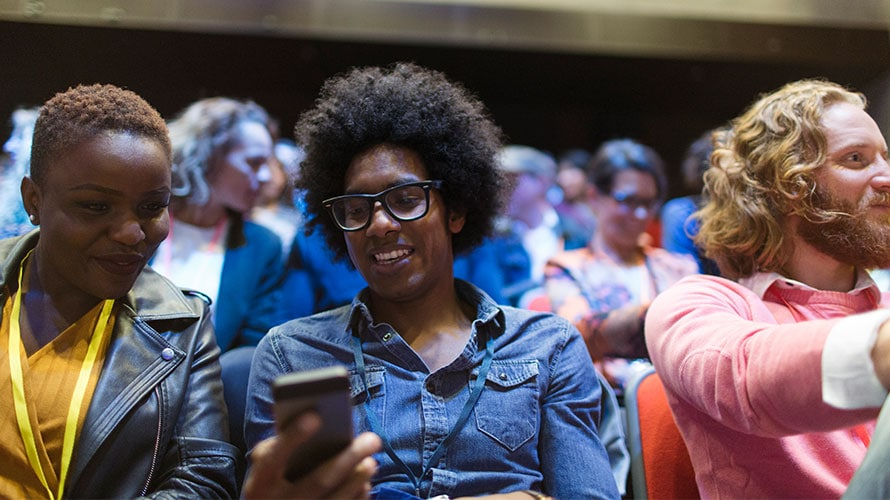
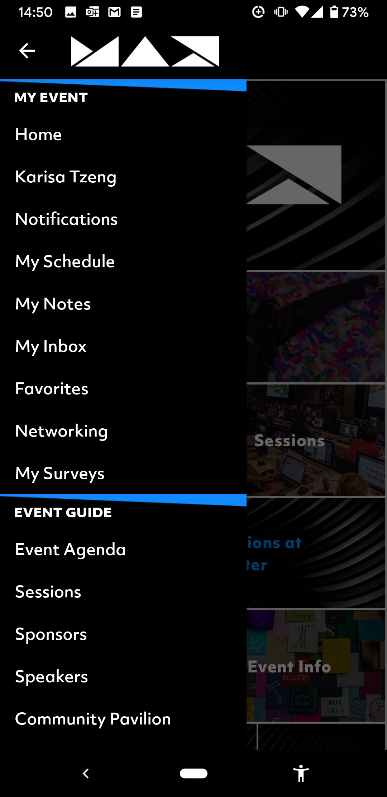
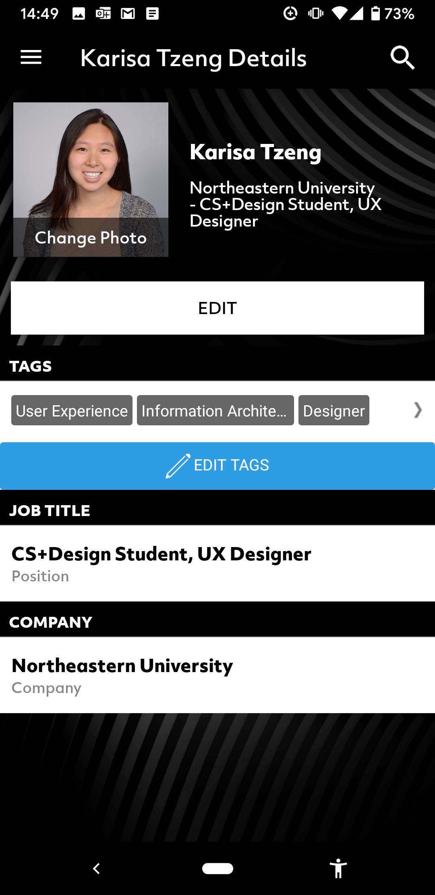
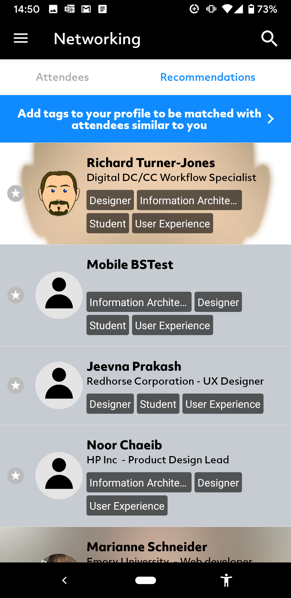
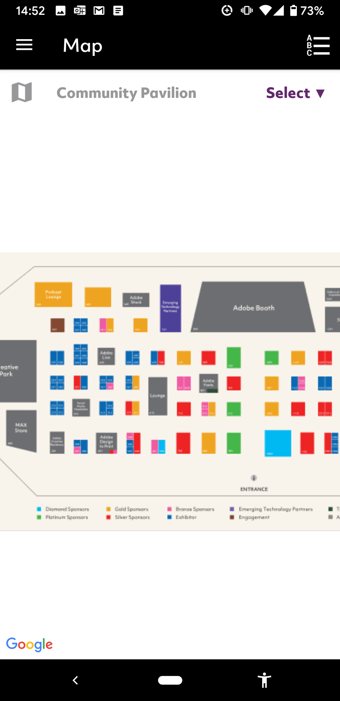
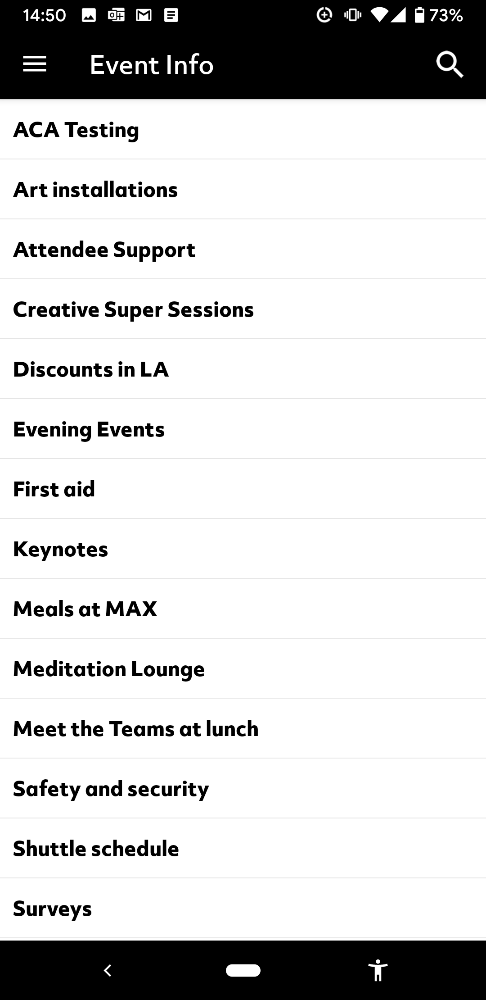
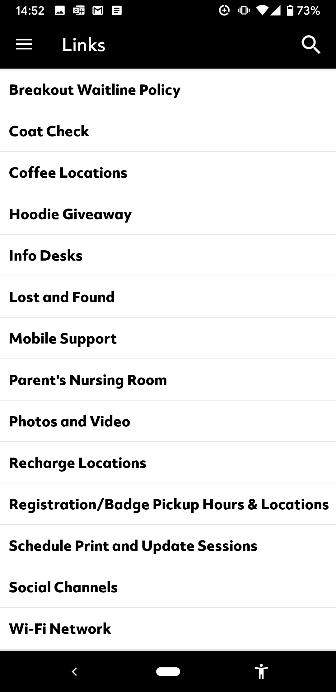
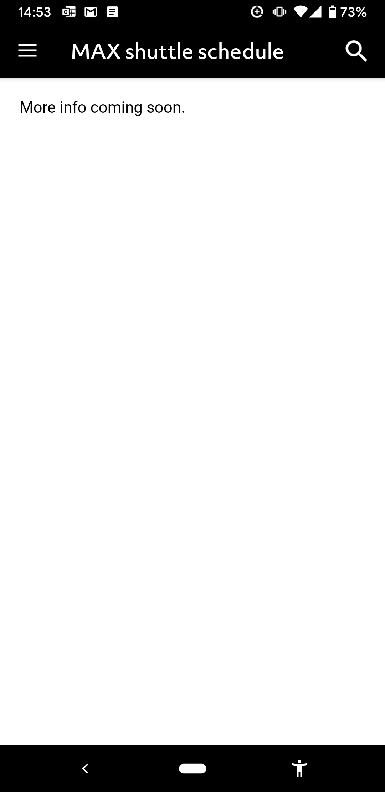
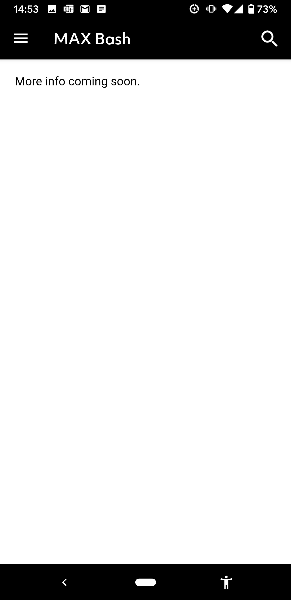
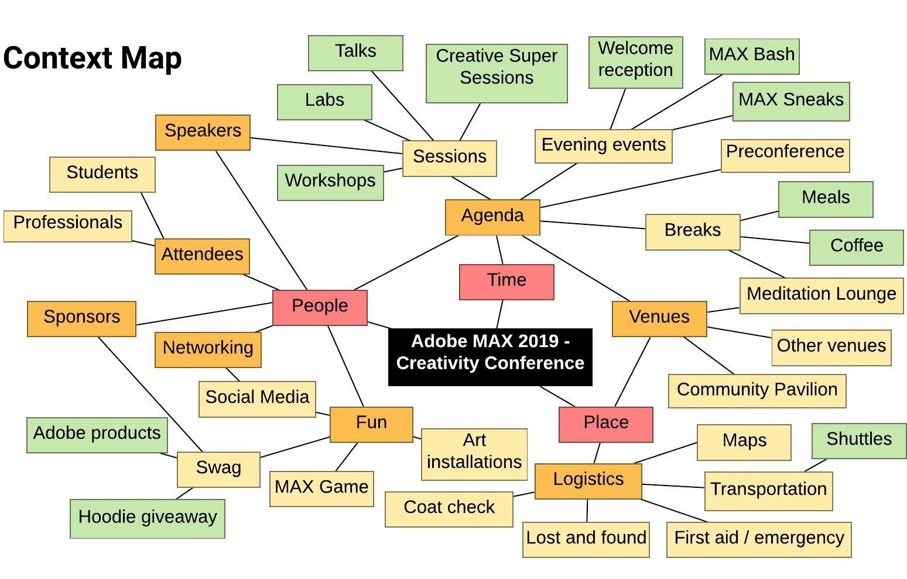

Adobe MAX Redesign
PERSONAL / FALL 2019
UX Designer
This is a current WIP. My timeline centers on the upcoming Adobe MAX conference, on Nov 4 - 6.
How might we design an event app to assist and enhance the attendee experience?
I set out to redesign the Adobe MAX app as a personal project. My main goal is to design a better user experience through research and IA, that encapsulates the power of mobile tech to augment an in-person experience.
The Problem
Like a few other conferences, Adobe MAX has an app for networking, onsite information, and more.
I was disappointed to find Adobe's app not much better than other event apps that I have used in the past; I won't uninstall it (FOMO?), but I cannot see myself using the app very much.
Current app:
{kind=link}
HOME
{kind=link}
MENU
{kind=link}
MY PROFILE
{kind=link}
NETWORKING
{kind=link}
VENUE MAP
{kind=link}
EVENT INFO
{kind=link}
"LINKS"
{kind=link}
SHUTTLE SCHEDULE
{kind=link}
MAX BASH INFO
From initial exploration of the app, I was confused and frustrated by its many buttons that led to pages missing information. My options for customizing my attendee profile are lacking, and I do not feel empowered to network with it. These are some familiar problems I have experienced in other event apps.
Goals
Design a solution where users/attendees feel that the app would be valuable to their conference experience.
This will not be completed by the actual Adobe MAX dates, so I set the project scope accordingly. I want to accomplish:
- User research
- Information architecture
- User flows
- Wireframes
- Takeaways that may apply to app designs for other events
Users and Audience
Users are Adobe MAX 2019 attendees.
Initial assumptions:
- Adobe is known for its "creative community", so many of the attendees are self-described creatives.
- Attendees are creative professionals, students, and curious others.
- Majority are creative professionals.
- Majority currently use one or more Adobe products.
Context
{kind=link}
Initial brainstorm of conference information.
User Research - Questions
- Who are Adobe MAX 2019 attendees?
- Why are they attending Adobe MAX 2019?
- What information would be helpful? (Transportation, shuttles, maps, swag, etc)
- Are there differences between Adobe MAX attendees and attendees at other events?
- What is the ratio of returning and first-time Adobe MAX attendees? Do they have different goals?
Takeaways
WIP -- check back for updates!